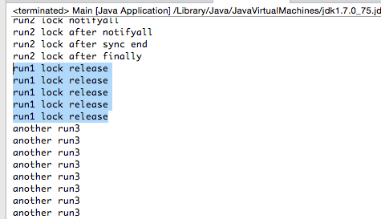
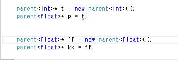
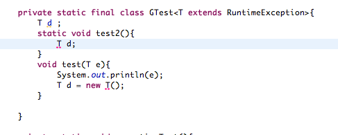
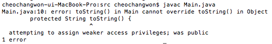
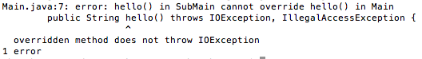
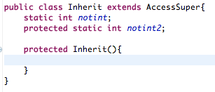
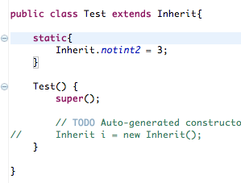

자바의 모든 객체는 각각 하나의 락, entry queue(entry set), waiting queue(waiting set)를 가지고 있다. 즉 자바의 객체는 Monitor처럼 행동한다. 즉 객체는 락으로 사용된다.
entry queue, waiting queue 정보 를 확인해 보자.
synchronized 동기화 과정
wait()와 notify()방식의 특징
블록을 잡은 부분을 보면 waiting 큐에서 깨어난 쓰레드가 먼저 실행되는 모습을 볼 수있다. 그밑에는 entry queue에 있던 다른 스레드들이 출력하는 메세지이다. 즉 waiting 큐에서 꺠어난 쓰레드가 우선적으로 실행되는 것을 알 수 있다.
notify()는 하나의 스레드만 깨우기 때문에 특정 스레드가 오랫동안 실행되지 않을 경우가 생길 수 있다. 따라서 notifyAll()을 이용해 모든 스레드를 깨운뒤 JVM의 스레드 스케줄링에 의해 처리되도록 한다.
제너릭에 사용되는 기술이다. 타입제거 기술의 역할을 다음과 같다.
아래와 같은 경우에 T는 Object로 replace 되기 때문에 부모 참조자로 자식 객체를 업캐스팅한 상태에서 인자로 아무 객체나 넣을 수 있다.
Type Erasure 이전
public class Node<T> {
public T data;
public Node(T data) { this.data = data; }
public void setData(T data) {
System.out.println("Node.setData");
this.data = data;
}
}
public class MyNode extends Node<Integer> {
public MyNode(Integer data) { super(data); }
public void setData(Integer data) {
System.out.println("MyNode.setData");
super.setData(data);
}
}
MyNode mn = new MyNode(5);
Node n = mn; // A raw type - compiler throws an unchecked warning
n.setData("any type");
제네릭을 분석해보고 MyNode에 브리지 메서드(오버라이드 메서드)를 만들어서 타입 불일치 현상을 해결한다.
Type Erasure 이후:
class MyNode extends Node {
// Bridge method generated by the compiler
//
public void setData(Object data) {
setData((Integer) data);
}
public void setData(Integer data) {
System.out.println("MyNode.setData");
super.setData(data);
}
// ...
}
제너릭과 템플릿은 설계시 클래스 내부적으로 사용되는 타입을 결정하는 것이 아닌 클래스를 사용할 때 타입을 결정할 수 있게 하는 기술이다.
서로 다른 타입임을 알 수 있다.
Java에서는 객체생성, static멤버나 변수에 사용이 불가능한 것을 볼 수 있다.
리턴값으로 false, true, 에러코드 를 주면되지 라고 생각할 수 있지만 에러코드 체계가 명확하게 잡혀있지 않다면 직관적이지 못한 방법이다. 따라서 Java의 예외는 에러코드보다 명시적이고 역시 컴파일 시간에 개발자에게 처리를 강제하기 때문에 기능적인 면에서도 뛰어나다.
프로그램 에러에는 컴파일 에러, 런타임 에러가 있다. 자바에서는 런타임 에러를 ‘에러(error)’와 ‘예외(exception)’ 두가지로 나눴다. 자바의 에러는 프로그램에서 처리될 수 없는 에러를 뜻한다. 프로그래머가 어려운 경우가 많다. 하지만 자바의 예외는 프로그램에서 적절히 처리될 수 있다.
java.lang.Error를 상속받는 종류로 OutofMemoryError나 ThreadDeath와 같은 에러가 있다.
java.lang.RuntimeException을 상속받는 종류의 예외는 소스코드 레벨에서 체크되지 않는다. 대표적으로 런타임 예외라는 말을 쓴다. 하지만 체크 예외도 실행중에 발생하는 예외이다. 이는 Error와 마찬가지로 처리될 수 없는 예외이다.
체크예외가 발생한다면 반드시 try-catch 구문으로 처리하거나 throws을 이용해 예외를 전가해야한다.
프로그래머들의 실수로 발생하여서 바로 복구가 불가능한 예외이다. 설마 여기서 실수를 하겠어? 라고 생각하지만 진짜 실수를 할 경우 발생시키는 예외라 볼 수 있다.
이는 프로그래머에게 근본적으로 문제를 바꾸기를 요구하는 예외이다. 예를들면 NullPointerException , IndexOutOfBoundsException , ClassCastException 과 같은 예외는 개발의 실수로 인해 발생하는 예외이다.
물론 예외를 처리할 수 있지만 근본적으로 코드상에서 바꿔야할 문제이다. 따라서 컴파일 시간에 try-catch를 이용한 처리를 요구하지 않는다.
사용자의 실수와 같은 외적인 요인에 의해 발생하며 처리할 수 있는 예외이다. 따라서 프로그래머가 개발할 당시 try-catch로 명시적으로 처리하길 요구한다.
이 예외는 외부요인에 의해 문제가 발생할 수 있으니 처리하길 요구하는 역할을 한다. 클라이언트나 외부요인의 예로는 FileNotFoundExcetpion , ClassNotFoundException , DataFormatException 이 있다.
컴파일 시간에 try-catch를 이용해 명시적 예외처리를 하기를 요구한다.
자바 컬렉션 프레임워크는 여러개의 데이터를 저장하고 관리할 수 있는 표준 프레임워크이다.
유용한 함수:
System.arraycopy(srcObj, 0, destObj, 0, 10); //원본 배열 0번지에서 목적지 0번으로 10개의 객체를 복사한다.
List와 Set은 java.util.Collection 인터페이스를 상속받은 Java의 인터페이스이다. List는 순서를 갖고 중복을 허용하는 집합이다. Set은 데이터의 중복을 허용하지 않는 집합이다.
List와 Set의 차이점은 데이터의 순서보장과 데이터 중복여부이다.(Set이 기본적으로 순서를 보장하지 않지만 Tree기반일 경우 삽입의 순서보장 대신 정렬기능을 지원한다.)
List 를 상속한 클래스는 Vector, ArrayList, LinkedList, Stack등이 있다. Set 을 구현한 클래스는 HashSet, SortedSet, TreeSet이 있다.
List에 값 추가/삭제:
boolean add(T object);
boolean addAll(Collection c);
void add(int index, T object); //지정된 위치에 값 삽입
boolean addAll(int index, Collection c);
Object remove(int index);
boolean remove(T object);
boolean removeAll(Collection c);
boolean retainAll(Collection c);
Object set(int index, Object element); //지정된 위치에 원소 수정
List의 용량조절
void ensureCapacity(int minCapacity); //최소 수용량 결정
void trimToSize(); //빈 공간을 없앤다. 결과적으로 capacity 값을 최소로 조절하게된다.
List의 특정원소의 인덱스 검색:
int indexOf(T obj);
int lastIndexOf(T obj);
새로운 배열이 생성되고 복사되는 과정에서 부하를 일으킨다.
장점
단점
장점
단점
JCF에서는 Stack과 Queue를 제공한다.
먼저 Stack은 Vector를 상속하여 구현되었다. 다음과 같은 연산을 지원한다.:
T push(T obj);
T pop();
T peek();
int search(T obj); //주어진 객체를 찾아서 그 위치를 반환한다. (배열과 달리 인덱스는 1부터 시작한다.)
Queue는 Stack과 달리 그 자체는 인터페이스이다.:
boolean offer(T obj); //큐에 삽입
Object peak(); //삭제하지 않고 값을 반환
Object poll(); //큐에서 꺼내온다.
Stack의 예는 다음과 같다.
Queue의 예는 다음과 같다.
Queue 인터페이스를 구현한 클래스 목록
Vector와 HashTable을 thread-safe 하지만 개발된지 오래된 클래스이므로 현재는 아래와 같은 방식으로 동기화를 처리한다.
Collections 클래스를 활용:
static List synchronizedList(List list);
얕은복사는 자바의 참조값을 전달하는 복사를 뜻한다. 깊은 복사는 포함하는 내용이 같은 복사본을 생성하는 것을 뜻한다.
Collections.sort(Collection c, Comparator comparator);
HashSet은 해시값을 이용해 원소들의 중복을 허용하지 않고 순서를 유지하지 않는 집합이다. HashSet은 중복검사를 위해 hashCode()의 결과값과 (eqauls() || 참조값 비교)의 결과값을 사용한다.
순서를 유지하기 위해선 LinkedHashSet을 사용해야한다.
합집합, 교집합, 차집합:
boolean addAll(Collection c); //합집합
boolean retainAll(Collection c); //교집합
boolean removeAll(Collection c); //차집합
Iterator iterator(); //Iterator을 사용하여 순회
HashSet과 HashMap의 중복의 조건:
if (e.hash == hash && ((k = e.key) == key || key.equals(k))) {
Red-Black Tree로 구현되어 있으며 Set을 구현하였기 때문에 중복저장을 허용하지 않는 자료구조이다.
장점
단점
인터페이스:
boolean add(T obj);
boolean addAll(Collection c);
boolean contains(Object o);
boolean containsAll(Collection c);
Object first();
Object last();
SortedSet headSet(Object toElement); // 이 객체보다 작은 값을 가진 집합을 반환한다. //범위검색
SortedSet tailSet(Object from); // 이 객체보다 같거나 큰 값을 가진 집합을 반환한다.
SortedSet subSet(Object from, Object to); // from과 같거나 크면서 to보다 작은 결과를 반환한다.
Iterator iterator(); //iterator를 사용하여 순회가능
boolean addAll(Collection c); //합집합
boolean retainAll(Collection c); //교집합
boolean removeAll(Collection c); //차집합
중복체크 코드는 TreeMap의 put에 관련되어 있다. 삽입하는 과정에서 같은 키가 존재하는지 찾아서 덮어 씌운다.
if (cmp < 0)
t = t.left;
else if (cmp > 0)
t = t.right;
else
return t.setValue(value);
중복하지 않을 경우 그냥 삽입한다.:
Entry<K,V> e = new Entry<>(key, value, parent);
if (cmp < 0)
parent.left = e;
else
parent.right = e;
Comparable은 비교되는 대상 내부에서 구현되어 객체를 정렬할때 사용된다. Comparator는 비교대상의 외부에서 2개의 대상을 비교하여 정렬하는 방식이다.
Comparable:
int compareTo(T obj); //비교대상 내부에서 구현될 때 To
Comparator:
int compare(T obj1, T obj2); //비교대상 외부에서 구현될 때
Map은 키를 이용해 값을 찾는 자료구조이다. 내부적으로 Map.Entry 타입의 키-값 쌍을 저장하고 있다.
Map 의 중요한 특징은 키는 중복되지 않으며 값은 중복될 수 있는 것이다. 따라서 같은 키로 저장하게되면 기존의 키-값 쌍을 덮어씌운다.
키-값쌍은 Set형태로 반환받을 수 있다.:
Set keySet(); //키 집합 (중복 불허)
Set entrySet(); //키-값 쌍 집합 (중복 불허)
Collection values(); //값 집합 (중복허용)
boolean containsKey(Object obj); //키가 존재하는지
boolean containsValue(Object obj); //값이 존재하는지
Object put(Object key, Object value);
Object get(Object key);
Map.Entry 인터페이스:
Object getKey();
Object getValue();
Object setValue(Object value);
먼저 해시 테이블 을 확인해보자.
HashSet과 HashMap의 중복의 조건:
if (e.hash == hash && ((k = e.key) == key || key.equals(k))) {
HashTable은 키나 값으로 null을 허용하지 않지만 HashMap은 허용한다.
Red-Black Tree로 구현된 이진탐색트리이다. HashMap에 비해 검색성능이 느리다. 단 데이터의 정렬이 필요하거나 범위검색에서 빠른 성능을 보인다. 기본적인 인터페이스는 HashMap과 비슷하다.
범위검색 인터페이스:
SortedMap headMap(Object toKey); //key보다 작은 값들, 포함하지 않는다.
SortedMap tailMap(Object fromKey); //key를 포함하여 큰 값 들
SortedMap subMap(Object toKey, Object fromKey); //from과 같거나 크면서 to 보다 작은 값 들
SortedMap은 일반 Map인터페이스를 사용하며 정렬되어 있다.
삽입하는 과정에서 같은 키가 존재하는지 찾아서 덮어 씌운다.
if (cmp < 0)
t = t.left;
else if (cmp > 0)
t = t.right;
else
return t.setValue(value);
중복하지 않을 경우 그냥 삽입한다.:
Entry<K,V> e = new Entry<>(key, value, parent);
if (cmp < 0)
parent.left = e;
else
parent.right = e;
RB트리 기반과 해시테이블 기반으로 나눠진다.
두 자료구조는 큰 차이점을 가지고 있다. 각각의 장점을 가지고 있는데 RB트리는 키가 정렬이 되있고 범위 검색에 빠른 성능을 보인다는 것이다. 반대로 HashMap은 정렬 기능이 없어서 범위 검색이 불가능하지만 키값 검색 성능이 우수하다.
사용 예시)
말그대로 Non-Blocking IO를 뜻한다.
OIO(Old I/O)의 문제점은 클라이언트마다 스레드가 할당되어 서비스를 하는 방식이여서 클라이언트 수에 비례하여 스레드 자원이 증가하는 것과 스레드가 지나치게 많아질 경우 컨텍스트 스위칭이 발생하는 등의 문제점으로 뽑힌다. 상황에 따라 다르지만 확실한 것은 NIO는 OIO에 비해 규모 확장성이 뛰어난 모델이라는 것이다.
NIO는 Non-Blocking을 통해 Polling을 구현하도록 도와준다. Polling 방식과 Non-Blocking을 통해 1개의 스레드로 모든 소켓을 검사할 수 있다.
NIO의 Selector를 사용하면 OS의 지원을 받아 소켓의 다양한 변화를 감지할 수 있다. Selector란 소켓을 관리하며 변화를 감지하는 역할을 한다. 이처럼 싱글 스레드를 이용해 다수의 클라이언트를 처리할 수 있는 것이 Java NIO의 장점이다. NIO 장점
무엇보다 중요한건 문제를 꼼곰히 읽은 뒤 푸는것이다.
오버라이드 메서드에서는 부모의 접근제한자보다 같거나 넓은 범위의 접근제한자를 사용해야한다. 좁은 범위의 접근제한자를 쓰면 컴파일 에러 가 발생한다.
protected -> public (오버라이드 됨) protected -> protected (오버라이드 됨) protected -> private (오버라이드 안됨, 컴파일 에러)
오버라이드 메서드는 부모의 예외보다 많이 선언할 수 없다. 그리고 부모의 예외보다 부모격인 예외를 던져선 안된다.
IOException -> IOException, NullPointException (불가능, 컴파일 에러) IOExcetpion -> Exception (불가능, 컴파일 에러)
static 제어자의 대상
멤버변수(멤버 클래스에 적용할 경우 스태틱 클래스 가능), 메서드
final의 대상
클래스 : 상속될 수 없는 클래스가 된다. (컴파일 에러)
메서드 : 메서드는 더 이상 오버라이드 될 수 없다. (컴파일 에러)
멤버변수 : 최초의 초기화 이후 변경되지 않음. (변수 초기화문이 어디에도(초기화 블록 또는 생성자) 없다면 컴파일에러, 초기화 하려고 하면 컴파일 에러)
지역변수 : 최초의 초기화 이후 변경되지 않음. (멤버변수와는 달리 초기화하지 않아도 컴파일 에러는 없음. 단, 지역변수와 마찬가지로 초기화 안하고 사용하려고 할 경우 컴파일 에러, 또 다시 초기화 하려고하면 컴파일 에러)
abstract
클래스 : 추상 메서드가 존재할 수 있음을 암시, 하지만 존재하지 않아도 에러는 발생하지 않음, 부모가 abstract가 아니더라도 추상 클래스로 바꿀 수 있음
메서드 : 구현부가 존재하지 않는 추상 메서드임을 나타냄
접근제어자
접근제어자 대상 - 클래스(public, default)
멤버변수, 메서드, 생성자(public, protected, (default), private)
public - 모든 범위에서 접근할 수 있다.
protected - 같은 패키지에서 접근이 되며 다른 패키지에서 상속으로 접근할 수 있다.
default - 같은 패키지 내에서만 접근이 가능하다. (아무것도 쓰지 않았을 때)
priavate - 클래스 내에서만 사용할 수 있다.
정리:
클래스 - public, default, abstract, final
메서드 - public, protected, private, final, abstract, static
멤버변수 - public, protected, private, final, abstract, static
지역변수 - final
클래스 초기화:
static{
//클래스 로딩과 함께 호출되는 블록
}
인스턴스 초기화:
{
//생성자 호출전에 실행되는 인스턴스 초기화 블록
}
This data type represents one bit of information, but its “size” isn’t something that’s precisely defined.
가비지컬렉터가 실행하는 메서드이다. 가비지컬렉션은 어플리케이션 생명주기 동안 한번도 실행되지 않을 수 있다. 따라서 가비지컬렉션의 대상이 되었다고 하여 이 메서드에서 중요한 작업을 해서는 안된다.
protected static 변수는 상속의 룰이 적용되서 다른패키지에서 접근가능하다.
 위와 같은 상황에서 콘솔에는 다음과 같이 출력되며 return은 finally다음에 실행된다.